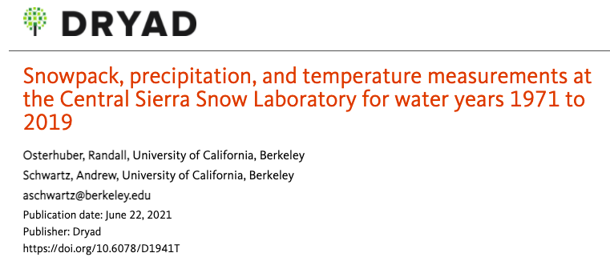
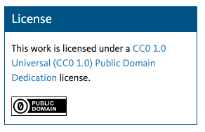

Data Case Study 1#
Take a look at the landing page for the dataset:
Snowpack, precipitation, and temperature measurements at the Central Sierra Snow Laboratory for water years 1970 to 2019
https://doi.org/10.6078/D1941T

With the information shown above, and using the link provided, answer the following questions:
Background#
Questions#
Why was the data collected?
What are the limitations of the data?
Publisher / Host#
Questions
Where is the data hosted? (What is the name of the repository?)
Is there a theme or subject focus to the repository?
What other types of data would you expect to find there?
Citation#
Questions
How would you cite the data?
Is there an example or recommendation?
Answer
Osterhuber, Randall; Schwartz, Andrew (2021), Snowpack, precipitation, and temperature measurements at the Central Sierra Snow Laboratory for water years 1971 to 2019, Dryad, Dataset, https://doi.org/10.6078/D1941T
Licensing#
Questions
Are you allowed to reuse this dataset?
How do you know?
Answer

Data#
Take a look at Whole_WY_1980.csv, one of the 49 data files.
Questions#
How many rows of data are there? Why?
What’s a Water Year? Can you tell when a Water Year starts?
When was the first snowfall of the 1979-1980 Water Year?
# Read in the data file from the 1980 water year
import pandas as pd
snow_data_1980 = pd.read_csv('./data/Whole_WY_1980.csv')
snow_data_1980
| Date | Air Temp Max (C) | Air Temp Min (C) | 24-hour Total Precip (mm) | Season Total Precip (mm) | % of Precip as Snow | % of Precip as Rain | New Snow (cm) | Season Total Snow (cm) | Snowpack depth (cm) | Snow Water Equivalent (cm) | Remarks | |
|---|---|---|---|---|---|---|---|---|---|---|---|---|
| 0 | 1979-10-01 | 23.31 | 8.88 | 0 | 0.000 | -- | -- | 0 | 0.0 | 0 | 0 | NaN |
| 1 | 1979-10-02 | 22.755 | 6.66 | 0 | 0.000 | NaN | NaN | 0 | 0.0 | 0 | 0 | changed charge |
| 2 | 1979-10-03 | 23.31 | 6.66 | 0 | 0.000 | NaN | NaN | 0 | 0.0 | 0 | 0 | NaN |
| 3 | 1979-10-04 | 23.31 | 5.55 | 0 | 0.000 | NaN | NaN | 0 | 0.0 | 0 | 0 | NaN |
| 4 | 1979-10-05 | 22.755 | 4.995 | 0 | 0.000 | NaN | NaN | 0 | 0.0 | 0 | 0 | NaN |
| ... | ... | ... | ... | ... | ... | ... | ... | ... | ... | ... | ... | ... |
| 361 | 1980-09-26 | 21.09 | 4.44 | 0 | 1968.794 | NaN | NaN | 0 | 1083.3 | 0 | 0 | NaN |
| 362 | 1980-09-27 | 20.535 | 2.775 | 0 | 1968.794 | NaN | NaN | 0 | 1083.3 | 0 | 0 | NaN |
| 363 | 1980-09-28 | 23.31 | 0.555 | 0 | 1968.794 | NaN | NaN | 0 | 1083.3 | 0 | 0 | NaN |
| 364 | 1980-09-29 | 25.53 | 6.105 | 0 | 1968.794 | NaN | NaN | 0 | 1083.3 | 0 | 0 | NaN |
| 365 | 1980-09-30 | 27.195 | 4.44 | 0 | 1968.794 | NaN | NaN | 0 | 1083.3 | 0 | 0 | NaN |
366 rows × 12 columns
Plot#
What if you plotted the data? What could you see?
import matplotlib.pyplot as plt
snow_data_1980.plot(x='Date', y='Season Total Snow (cm)')
plt.xticks(rotation = 45)
plt.show()
Final Thoughts
What other questions could you explore with this data?